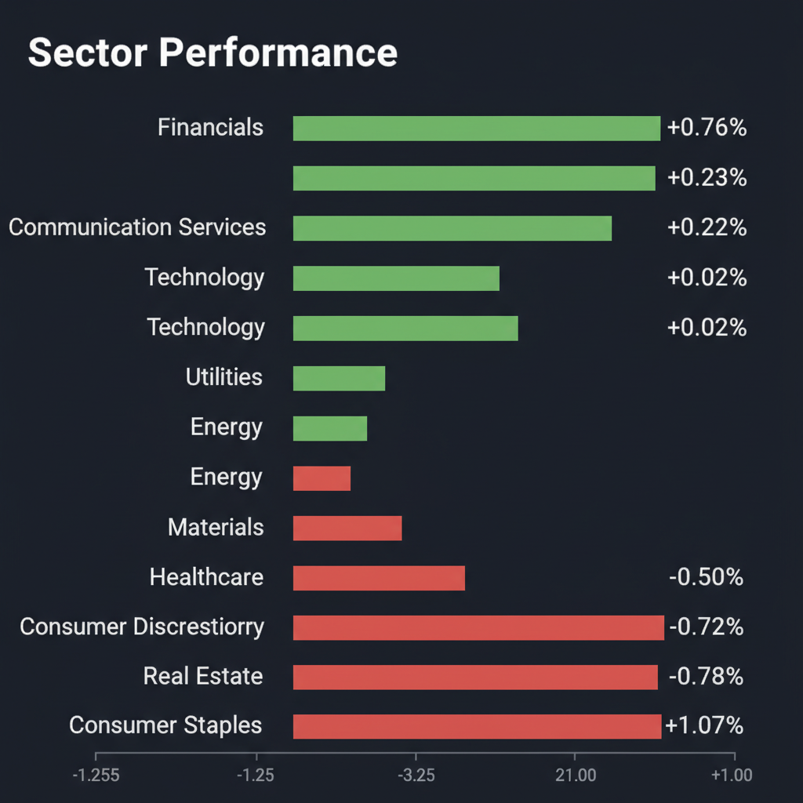
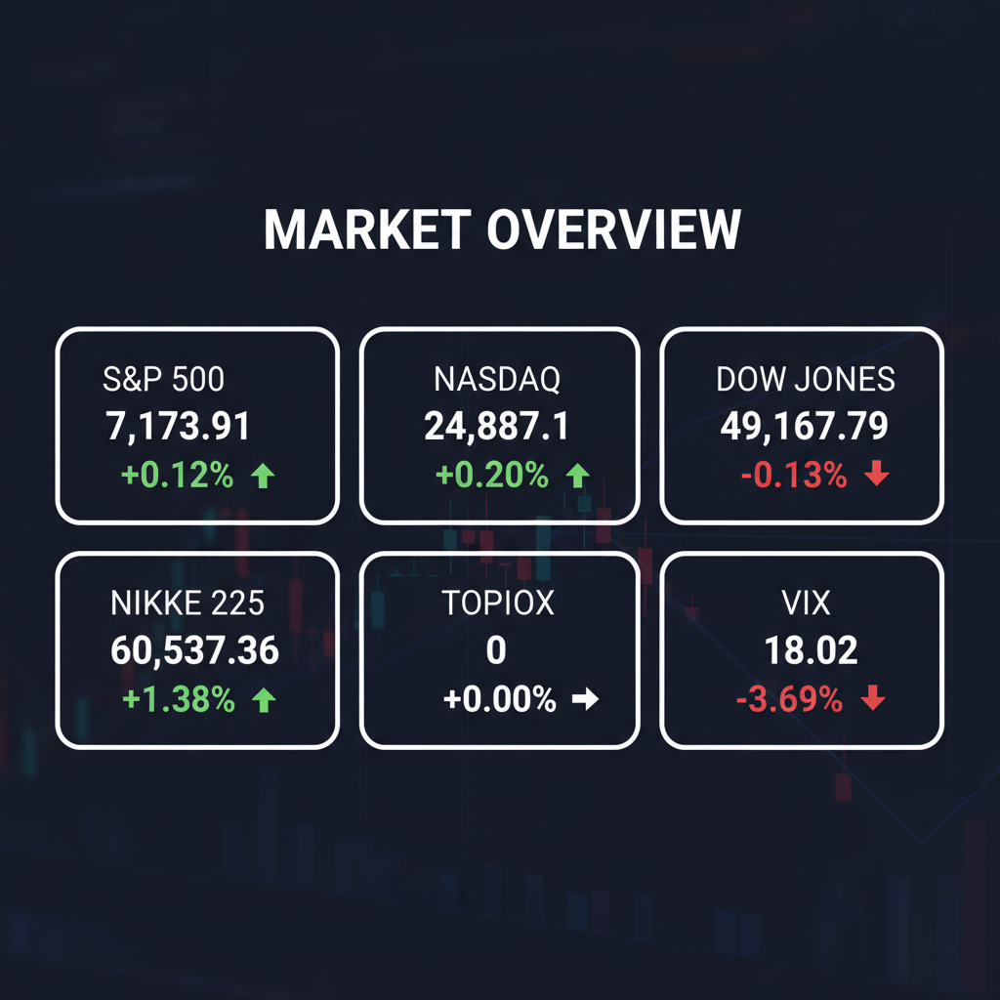

Daily Investment Report - 2026-04-28
Generated: 2026/4/28 7:26:16


本日の投資チームミーティングの分析結果を統合した、投資家向けの最新アクションレポートをお届けします。
1. エグゼクティブサマリー
- 日米の主要指数は歴史的な高値圏（日経平均6万円超、S&P500最高値圏）で推移していますが、水面下では中東の地政学リスクによる「スタグフレーション」の懸念が高まっています。
- 巨大ハイテク株への一極集中はバリュエーションの限界に達しつつあり、今後は「国策テーマ（AIインフラ・再生エネルギー）」に乗る出遅れ中小型株への資金シフトが予想されます。
- 現在の異常に低いボラティリティ（VIX指数低下）は嵐の前の静けさであり、キャッシュ比率の引き上げと厳格な押し目買いに徹する「防御と選別」のハイブリッド戦略が求められます。
2. 注目銘柄リスト
強気（買い推奨）
- ティラド（7236） [約300億円規模]: 従来の自動車向け熱交換器メーカーから、AIデータセンター向けの液冷システム関連へと変貌を遂げるポテンシャルを持つ隠れたAIインフラ銘柄です。PBR1倍割れの割安なバリュエーションと営業利益率の改善が同居しており、下値リスクが限定的です。
- さくらインターネット（3778） [中型株規模]: 経済安全保障を背景とした「国策GPUクラウド」の絶対的リーダーであり、国内のAI計算資源需要を独占する高いポテンシャルを秘めた破壊的成長候補です。
- サンドラッグ（9989） [約4,000億円規模]: 継続的に二桁のROEを叩き出す高効率経営が強みのディフェンシブ銘柄です。インフレ下での価格転嫁力に優れ、不安定な相場環境下でポートフォリオを安定させる強力なアンカーとなります。
中立（様子見）
- イメージ ワン（2667） [数十億円規模]: 宇宙（衛星画像解析）や防衛分野に特化したニッチトップ企業であり、地政学リスク下での大化け候補ですが、慢性的な赤字懸念とボラティリティの高さから、トレンド転換を確認するまでは打診買いにとどめるべきです。
- ラクス（3923） [中型株規模]: クラウドSaaS企業として堅調な成長を示していますが、金利が高止まりするマクロ環境下では将来キャッシュフローの割引価値が目減りしやすく、現在のバリュエーションは割高感が否めません。
弱気（警戒）
- 日産自動車（7201） [大型株]: 赤字予想から黒字化への劇的な上方修正を発表しましたが、本業の競争力回復ではなく為替（円安）の恩恵に過ぎない可能性が高く、急激な円高反転時の業績崩壊リスクが極めて高いです。
- マイクロン・テクノロジー（MU） [大型株]: メモリ需要の長期化期待で株価が急伸していますが、半導体特有のシクリカルなピークアウトのリスクと高すぎるバリュエーションを考慮すると、現在の価格からの新規フルエントリーは危険です。
3. セクター推奨ランキング
- 1位: 再生可能エネルギー（欧州の電力価格高騰とホルムズ海峡封鎖懸念により、化石燃料からの脱却という不可逆的な国策投資マネーの最大の受け皿となります）
- 2位: 金融（銀行・保険）（インフレ再燃による金利の高止まり「Higher for Longer」の恩恵を直接享受し、テクニカル的にも強い資金流入が確認されています）
- 3位: AIインフラ関連（空調・液冷・データセンター）（大型半導体株が過熱する中、AIの猛烈な電力消費と排熱問題を物理的に解決する「裏方の中小型インフラ企業」にアルファの源泉があります）
- 4位: 生活必需品・不動産（不動産は金利上昇に極めて弱く、生活必需品はインフレによるコスト増の価格転嫁が難しいため、当面はアンダーウェイトを推奨します）
- 5位: エネルギー多消費型素材・石油化学（原油高による製造コスト増が粗利率を容赦なく圧迫するため、スタグフレーション環境下で最も業績悪化リスクが高いセクターです）
4. 今週の注目イベント
- 4月28日: ソシオネクスト、信越化学工業、ＮＥＣなど計94社の決算発表（半導体関連や化学メーカーの業績ガイダンスに注目）
- 直近（随時）: トランプ氏とイラン外相による新たな外交交渉の動向（エネルギー価格と地政学リスクを左右する最大のカタリスト）
- 直近（随時）: OpenAIやSpaceXなど、米国の超大型ハイテク・宇宙関連のIPO準備動向（グローバルなリスクマネーの需給バランスに影響）
5. リスク要因
- ホルムズ海峡の実質的な機能不全に伴うエネルギー価格の急騰と、世界的なスタグフレーション（インフレ再燃と景気後退の同時進行）の襲来。
- 指数が未踏の高値圏にある中、極端に低下したVIX指数（18台）が示す「市場のテールリスクに対する無防備さ」と、突発的な悪材料によるフラッシュ・クラッシュ（急落）。
- 為替差益によって下駄を履かされた日本企業の「幻の好業績」が、日米金利差の変動に伴う急激な円高への巻き戻しによって剥落するリスク。
- 期待先行で買われているAI・半導体関連株において、マネタイズの遅れや設備投資のピークアウトが確認された場合の強烈なマルチプル・コンストラクション（PERの縮小）。
6. アクションアイテム
- ポートフォリオ全体のリスク許容度を見直し、流動性の高いキャッシュ（現金等価物）比率を20〜30%まで引き上げる。
- バリュエーションが限界に達している大型AI・半導体銘柄のポジションを一部利益確定（トリミング）し、確実なキャッシュフローを持つPBR1倍割れの中小型株へ資金をリバランスする。
- 注目銘柄（ティラド、さくらインターネット等）への新規エントリーは本日の寄り付きでは行わず、テクニカル指標の過熱感が冷める短期的なプルバック（押し目）を待つ。
- 地政学リスクの顕在化に備え、VIXコールオプションの買い、または日経ダブルインバース等のダウンサイドヘッジ商品をポートフォリオの3〜5%に組み込む。